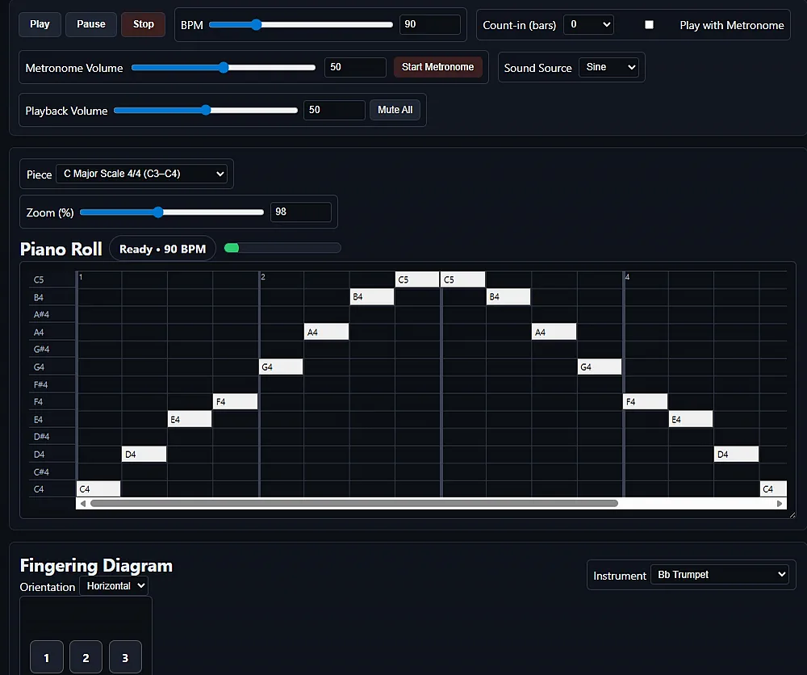
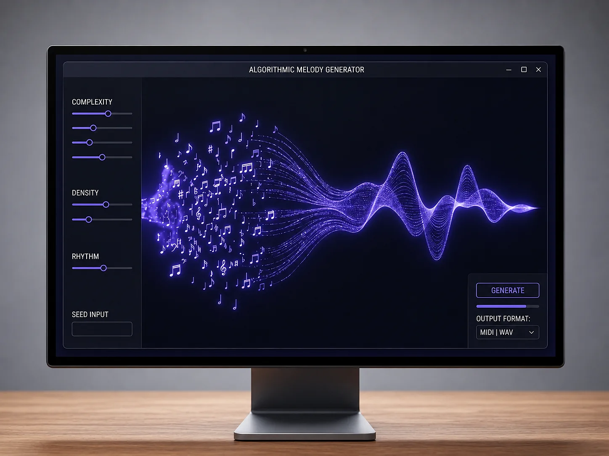
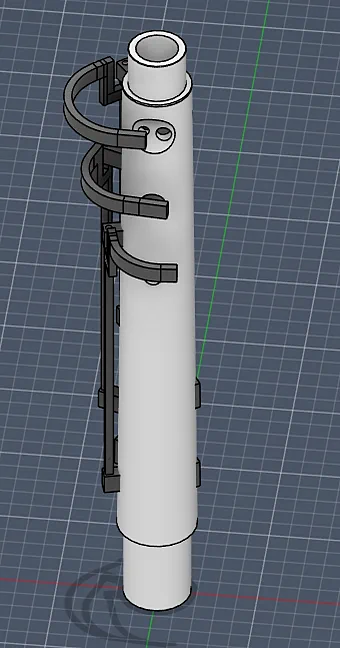
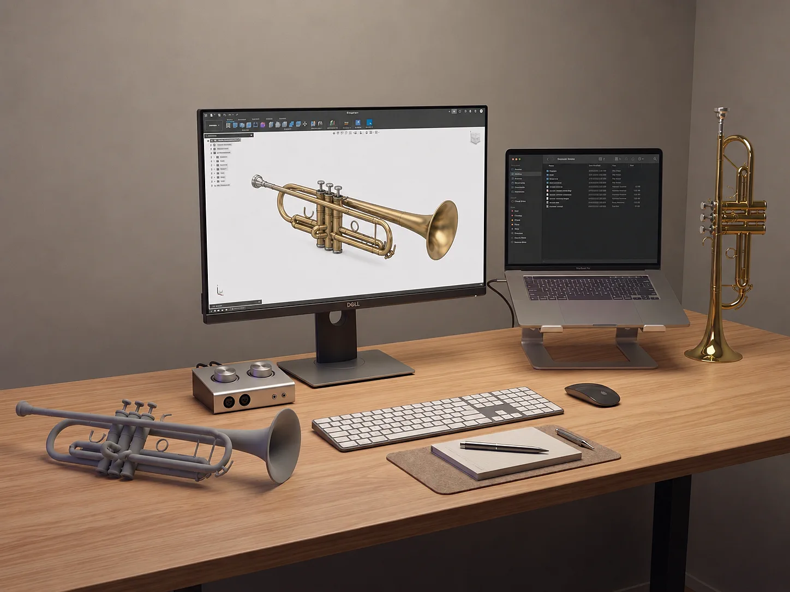
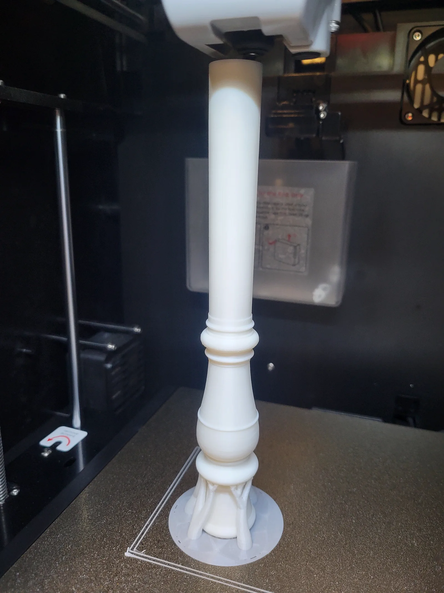
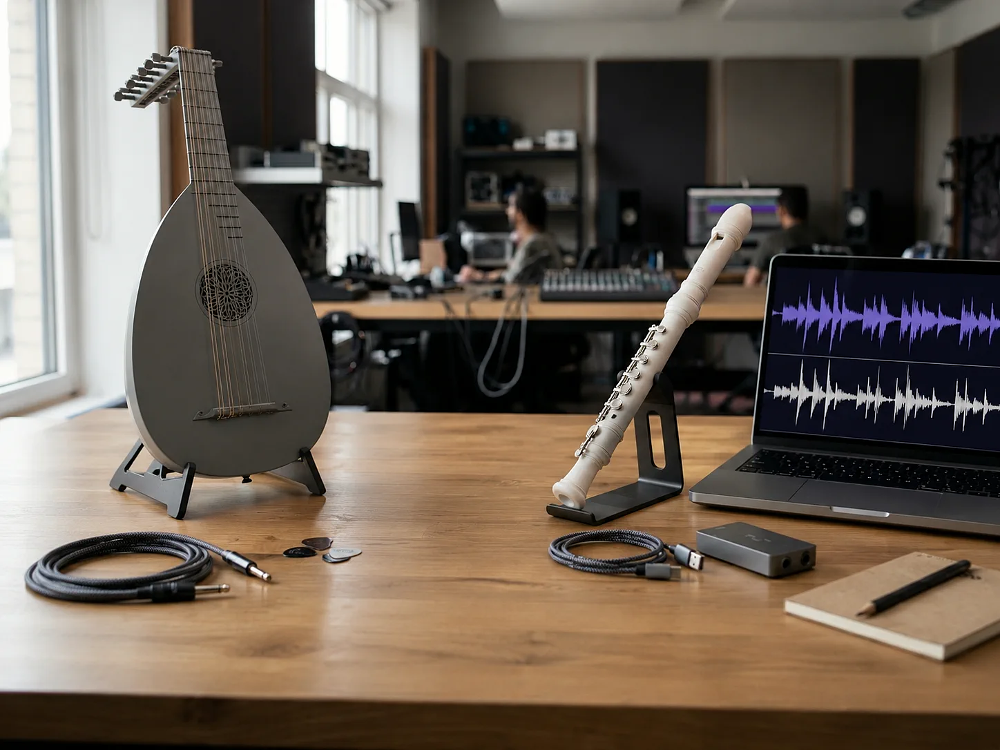
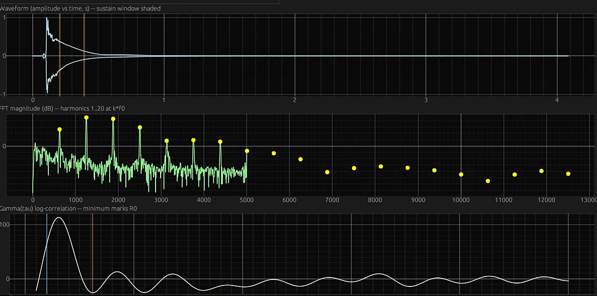
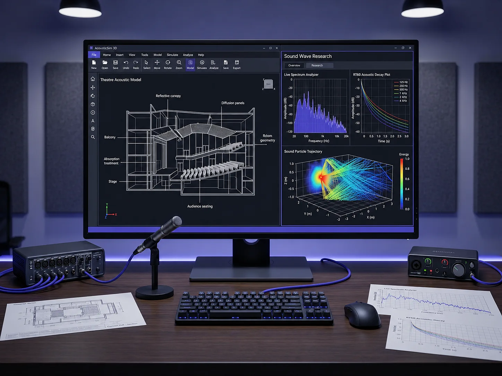

End-to-End Engineering, From Screen to Physical Form.
We deliver software, hardware, and research solutions for clients who demand precision at every layer.
Core Capabilities


App Development
Cross-platform application development for web, mobile, and specialized platforms. We build performant, modular software with a focus on signal processing, data visualization, and user experience.


3D Prototyping
From concept sketches to production-ready models using Blender, Autodesk Fusion, and professional CAD tooling. We prototype enclosures, instruments, mechanical parts, and custom objects.


Additive Manufacturing
FDM and SLS-based fabrication for rapid prototyping and functional end-use components. We handle material selection, print optimization, and post-processing for client and research applications.


Acoustic R&D
Applied research spanning acoustics, musical instrument science, DSP, and sonic technology. We partner with academic institutions and private clients on experimental and development projects.
Ready to elevate your project?
We offer initial consultations for new clients and research partnerships.
Get in Touch